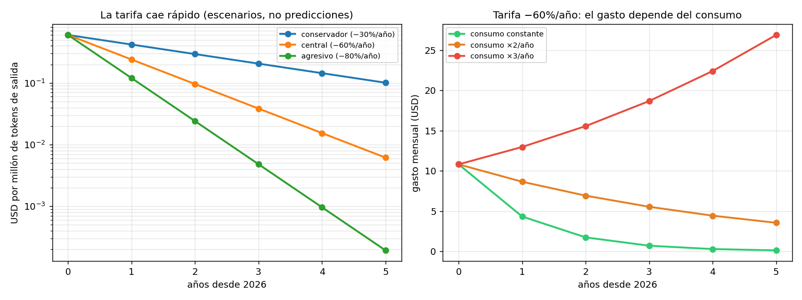

05 — Deriva de precios: escribir un modelo de costos que no caduque¶
El problema con las cuatro secciones anteriores¶
§1 a §4 produjeron números concretos: $0.60 por millón de tokens, $2.90 la hora de GPU, un break-even en 92 millones de queries mensuales, un costo de $10.80 al mes.
Todos son falsos dentro de dos años. No aproximadamente falsos: falsos por un factor grande. Y lo peor de un número caduco no es que esté mal, sino que sigue pareciendo respetable — está impreso, tiene decimales, viene de un cálculo.
Esta sección es sobre eso: qué se mueve, qué no, y cómo escribir análisis económicos que envejezcan bien.
La analogía: precios nominales y precios relativos¶
Un economista tiene entrenamiento específico para esto. Nadie compara un salario de 1995 con uno de 2026 sin deflactar, ni evalúa una política mirando el gasto nominal. La disciplina es separar el nivel (que se mueve con todo lo demás) de los precios relativos y las estructuras (que son la información real).
Un modelo de costos de inferencia escrito en niveles nominales tiene exactamente el mismo defecto que un informe de gasto público sin deflactar. La solución también es la misma: razonar en ratios, parametrizar los niveles, y fechar todo.
Corrida en code/05-deriva-precios.py.
Cuán rápido caduca un número¶
Tres escenarios de caída anual de tarifa —escenarios parametrizados, no predicciones— aplicados a la tarifa de referencia:
escenario | caída/año | año 0 | año 1 | año 2 | año 3
------------------------------------------------------------------
conservador | 30% | $ 0.6000 | $ 0.4200 | $ 0.2940 | $ 0.2058
central | 60% | $ 0.6000 | $ 0.2400 | $ 0.0960 | $ 0.0384
agresivo | 80% | $ 0.6000 | $ 0.1200 | $ 0.0240 | $ 0.0048
En el escenario central, el precio de hoy es 16 veces el de dentro de tres años. Un documento que hoy afirme "esta arquitectura cuesta $500 al mes" estará equivocado por 16× en el horizonte en que la gente todavía lo va a estar leyendo.

Los tres escenarios son supuestos fechados en 2026-08, elegidos para cubrir un rango plausible. No hay ninguna afirmación acá sobre cuál va a ocurrir. El valor del ejercicio no está en acertar la tasa: está en ver qué conclusiones cambian de signo según cuál sea.
La paradoja de Jevons¶
Acá está el resultado que contradice la intuición cómoda de "no te preocupes por el costo, va a bajar". Con la tarifa cayendo 60% anual, y variando cuánto crece el consumo por año:
crecimiento del consumo | año 0 | año 1 | año 2 | año 3 | año 4
----------------------------------------------------------------------------------------
consumo constante | $ 10.80 | $ 4.32 | $ 1.73 | $ 0.69 | $ 0.28
consumo +50%/año | $ 10.80 | $ 6.48 | $ 3.89 | $ 2.33 | $ 1.40
consumo ×2/año (agéntico) | $ 10.80 | $ 8.64 | $ 6.91 | $ 5.53 | $ 4.42
consumo ×3/año | $ 10.80 | $ 12.96 | $ 15.55 | $ 18.66 | $ 22.39
Con el consumo creciendo al triple anual, el gasto sube pese a que la tarifa cae 60% por año. Es la paradoja de Jevons de manual: abaratar un insumo aumenta su consumo lo suficiente como para que el gasto total crezca.
Y el escenario de consumo ×2 o ×3 anual no es rebuscado, es la trayectoria que ya se ve. Cada cosa que la industria adoptó entre 2024 y 2026 empuja el consumo por query hacia arriba:
- Contextos más largos: donde antes ibas con 5 chunks, ahora vas con 50.
- Pasos agénticos: una query del usuario ya no es una llamada al modelo, son N. El módulo 06 (harness) trata justamente esto, y §8 de ese módulo mide la varianza de costo por tarea que introduce.
- Reintentos, verificación, auto-crítica: cada capa de calidad cuesta llamadas.
- Razonamiento extendido: los modelos que "piensan" antes de responder generan muchos tokens que el usuario nunca ve, y que se pagan igual.
"Va a bajar de precio" no es un plan de costos. La tarifa baja; tu consumo por query sube más rápido. La disciplina de
03 §10no es transitoria.
Qué le pasa a la conclusión de §4¶
La prueba de fuego: ¿el veredicto sobre self-hosting sobrevive a la deriva?
Suponiendo que la hora de GPU cae la mitad de rápido que la tarifa —el hardware es un bien físico con costos de fabricación, mientras la tarifa incorpora también mejoras de software y competencia—:
año | tarifa API | GPU $/h | break-even queries/mes
--------------------------------------------------------
0 | $ 0.6000 | $ 2.90 | 92 M
1 | $ 0.2400 | $ 2.03 | 186 M
2 | $ 0.0960 | $ 1.42 | 388 M
3 | $ 0.0384 | $ 0.99 | 836 M
El break-even se aleja. Cada año que pasa, self-hostear requiere más volumen para tener sentido, porque la tarifa cae más rápido que el hardware. La conclusión de §4 no solo sobrevive: se refuerza con el tiempo.
Esto es lo que hace útil el análisis de sensibilidad. No confirmó una conclusión —eso sería sospechoso—, mostró por qué es robusta: no depende del nivel de los precios sino del ratio entre dos tasas de caída, y ese ratio tiene una razón estructural para mantenerse (software vs. hardware).
El supuesto que la rompería, y hay que decirlo: si el hardware cayera más rápido que la tarifa —por ejemplo, con un exceso de capacidad de GPUs que desplomara el precio del alquiler mientras los proveedores sostienen márgenes—, el break-even se acercaría. Es el escenario a vigilar.
Inventario: qué es robusto y qué es perecedero¶
conclusión | clase | por qué
-------------------------------------------------------------------------------------------------
El output cuesta más que el input (§1) | ROBUSTA | es física, no precio
Recuperar de más es barato, responder largo caro (§1) | ROBUSTA | ratio, no absoluto
El batching da costo medio decreciente (§2) | ROBUSTA | estructura de costos
La latencia explota cerca de la saturación (§2) | ROBUSTA | teoría de colas
Cuantizar exige medir en tu golden (§3) | ROBUSTA | método, no número
La API gana al self-hosting en este escenario (§4) | ROBUSTA+ | se refuerza con el tiempo
El break-even está en ~92 M queries/mes (§4) | PERECEDERA | se mueve con ambos precios
La API cuesta $10.80/mes (§4) | PERECEDERA | caduca en meses
$/M tokens de cada modelo (todo el repo) | PERECEDERA | centralizada en prod_lib
Un 70B bf16 no cabe en 80 GB (§1, §3) | SEMI | cambia si cambia el hardware
El patrón es nítido y vale como regla general:
Las conclusiones robustas son ratios, estructuras o métodos. Las perecederas son, sin excepción, niveles absolutos en dólares.
Eso da una heurística concreta al escribir: cada vez que una frase contiene un signo de dólar sin fecha al lado, es candidata a caducar. Cada vez que contiene un "×" o un "más que", probablemente sobreviva.
Cómo escribir para que envejezca bien¶
Cuatro reglas, todas aplicadas en este repo:
- Los niveles viven en un solo lugar. Todas las tarifas del repo salen de
prod_lib.PRICING_USD_PER_M_TOKENS; ni esta masterclass las duplica. Cuando caduquen, caducan en un archivo. Es la decisión 3 del plan maestro, y es esta sección aplicada al propio repositorio. - Razonar en ratios. "El output cuesta 4-5× el input" sobrevive a cualquier cambio de nivel. "El output cuesta $10 por millón" no llega a fin de año.
- Fechar todo supuesto. Las specs de GPU llevan su fuente; los precios/hora
están marcados
[dato estimado]; los escenarios de caída están fechados en 2026-08. Un supuesto sin fecha es un supuesto que alguien va a tomar por hecho. - Hacer sensibilidad, no predicción. La pregunta útil nunca es "¿cuánto va a costar en 2029?". Es "¿qué decisión cambia si el precio cae 30% en vez de 60%?". La mayoría de las veces la respuesta es ninguna, y eso es exactamente lo que uno quiere saber.
La regla 4 tiene una consecuencia práctica que vale para el resto del repo: si una decisión no cambia de signo en ningún escenario razonable, dejá de analizarla y tomala. Buena parte del tiempo que se gasta refinando estimaciones de costo se gastaría mejor en el corpus.
Estado del arte (2026)¶
| Aspecto | Estado | Detalle |
|---|---|---|
| Caída sostenida del $/token | 🟢 Hecho establecido | Varios años consecutivos; la tasa exacta se discute, la dirección no |
| Caída del costo de capacidad equivalente | 🟢 Más rápida que el hardware | Mejoras de software (batching, cuantización, arquitectura) se acumulan |
| Crecimiento del consumo por query | 🟢 Más rápido que la caída | Contexto, agentes, razonamiento extendido; todos empujan arriba |
| Efecto Jevons en gasto agregado | 🟢 Observado | El gasto total de la industria sube mientras el precio unitario baja |
| Precio de GPU on-demand | 🟡 Volátil en ambos sentidos | Depende de ciclos de capacidad; el supuesto más frágil de esta sección |
| Modelos de costo con fecha de caducidad explícita | 🔴 Rareza | Casi ningún análisis publicado fecha sus supuestos |
| Predicciones a 3+ años de precio unitario | 🔴 No confiables | Ni las de la industria ni las de terceros; usar escenarios |
La última fila merece énfasis: esta sección no predice nada, y la ausencia de predicción es deliberada. Las dos filas rojas son el hueco que este módulo intenta no repetir.
Lo que viene en la próxima sección¶
Las cinco secciones anteriores calcularon costo. §6 hace la pregunta que un
producto necesita responder: margen. El costo por query es un insumo; lo que
decide si el negocio existe es cuánto queda después de restar el costo de servir a
un cliente del precio que ese cliente paga — y ahí la distribución importa más que
la media, igual que en 03 §10.
Conexiones¶
- §4 (self-hosting): su conclusión pasa la prueba de sensibilidad y se refuerza. Su break-even numérico, en cambio, es perecedero.
03 §10(costo en producción): ahí se dijo que la caída de precios no relaja la disciplina porque el tráfico crece más rápido. Acá está el mecanismo con números: Jevons.03 §8(versionado de modelos): la deriva de precios es una razón recurrente para migrar de modelo; shadow y canary son cómo se hace sin susto.- Plan maestro (decisión 3): centralizar las tarifas en
prod_libes esta sección aplicada al repo antes de escribirla. - 06-harness (§8, planificado): el consumo ×2-×3 anual viene sobre todo de los bucles agénticos. Ahí se mide.